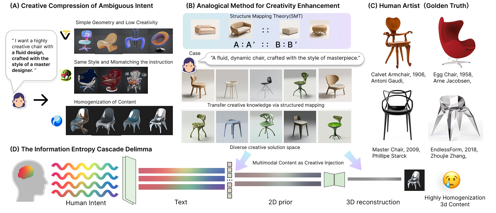
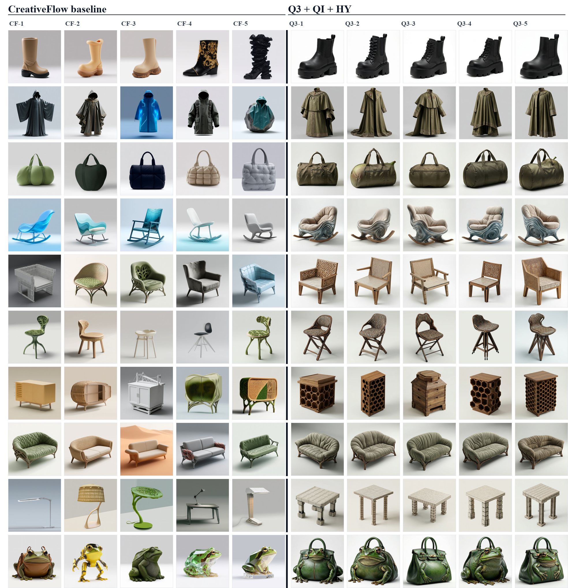
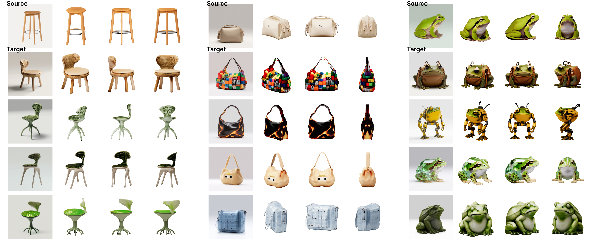
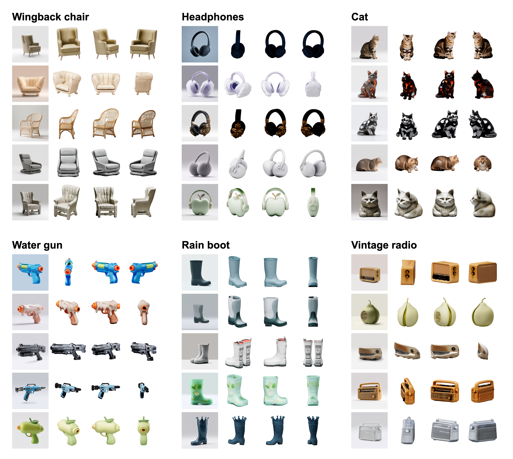

CreativeFlow: A Benchmark and Dataset for Analogical Creativity in 3D Asset Generation
Year: 2026.5.
Standard text-to-3D pipelines often collapse ambiguous creative intent into homogenized outputs. We introduce CreativeFlow, a benchmark and dataset for quantifying analogical creativity in 3D asset generation. Unlike reconstruction-oriented datasets, CreativeFlow organizes generation as a one-to-many relational transfer problem: 300+ source objects, 3,000+ verified analogical relations, and 6,000+ meshes. By combining structured mappings from bionic and aesthetic knowledge graphs with open-ended LLM associations, it expands intent into a diverse creative solution space while keeping each variant traceable to its source–relation–target family. We further propose a multi-dimensional evaluation protocol covering semantic transfer, form diversity, and creative yield, and show that creativity is compressed mainly before 3D reconstruction—structured text transfer and image adaptation carry the creative signal, whereas swapping 3D backends alone recovers little.

Overview of CreativeFlow. (A) Standard 3D models often collapse creative prompts into homogenized outputs. (B) Our analogy-driven strategy expands intent into diverse, controllable 3D designs. (C) Human designs exemplify the target structural richness. (D) We frame current failures as an entropy cascade across text, 2D priors, and 3D reconstruction.

Representative cases comparing a standard Qwen3 + Qwen-Image + Hunyuan3D pipeline with CreativeFlow structured transfer on the same source–relation–target tasks.

